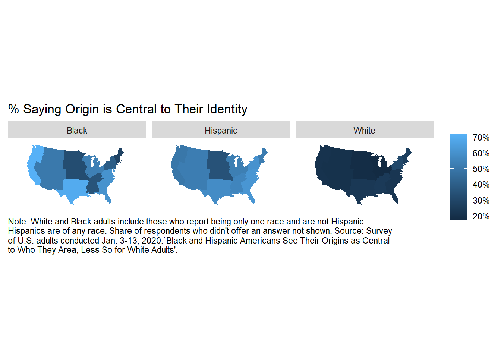

Ethnicity and Self-Identity
Exploration of 2020 Pew Research Center Survey
Michael Foley
2021-12-26
Ipsos Public Affairs (Ipsos) conducted a survey on behalf of Pew Research from Jan 3-13, 2020 related to knowledge and attitudes about the 2020 census. The target population was non-institutionalized adults age 18 and older residing in the United States. The survey was conducted in part to explore the impact of a change in questions related to race and ethnicity. This project further explores racial/ethnic identity, estimating its relationship with other social and demographic factors: age, gender, education, and state of residence.
Load Data Set
The 2020 Census survey #1 data set is available for download at the PEW Research web site.1
pew_dat_0 <- foreign::read.spss(
"../data/Jan20 Census_cleaned dataset.sav",
to.data.frame = TRUE
)
dim(pew_dat_0)## [1] 3535 156The data set consists of 156 variables collected from 3,535 participants. Only a fraction of the columns are of interest for this analysis.
pew_dat_1 <- pew_dat_0 %>%
mutate(
CENRACE2020 = case_when(
CENRACE2020_1 == "Yes" ~ "White",
CENRACE2020_2 == "Yes" ~ "Black", # Black or African American
CENRACE2020_3 == "Yes" ~ "Other", # American Indian or Alaska Native
CENRACE2020_4 == "Yes" ~ "Asian", # Chinese
CENRACE2020_5 == "Yes" ~ "Asian", # Filipino
CENRACE2020_6 == "Yes" ~ "Asian", # Asian Indian
CENRACE2020_7 == "Yes" ~ "Asian", # Vietnamese
CENRACE2020_8 == "Yes" ~ "Asian", # Korean
CENRACE2020_9 == "Yes" ~ "Asian", # Japanese
CENRACE2020_10 == "Yes" ~ "Asian", # Other Asian
CENRACE2020_11 == "Yes" ~ "Pacific Islander", # Native Hawaiian
CENRACE2020_12 == "Yes" ~ "Pacific Islander", # Samoan
CENRACE2020_13 == "Yes" ~ "Pacific Islander", # Chamorro
CENRACE2020_14 == "Yes" ~ "Pacific Islander", # Other Pacific Islander
CENRACE2020_15 == "Yes" ~ "Other", # Some other race
TRUE ~ "Other"
),
simple_eth = factor(
case_when(
racnum == 1 & CENHISPAN2020_1 == "Yes" & CENRACE2020 == "White" ~ "White",
racnum == 1 & CENHISPAN2020_1 == "Yes" & CENRACE2020 == "Black" ~ "Black",
racnum == 1 & CENHISPAN2020_1 == "No" ~ "Hispanic",
TRUE ~ "Other"
),
levels = c("White", "Black", "Hispanic", "Other")
),
CENIDENTITYa = factor(
CENIDENTITYa,
levels = c("My origin is not central to my identity",
"My origin is central to my identity",
"Refused"),
labels = c("Not central", "Central", "Refused")
),
CENIDENTITYb = factor(
CENIDENTITYb,
levels = c("I am not too familiar with my origins",
"I am very familiar with my origins",
"Refused"),
labels = c("Not too familiar", "Very familiar", "Refused")
),
CENIDENTITYc = factor(
CENIDENTITYc,
levels = c("I do not feel a strong connection with the cultural origin of my family",
"I feel a strong connection with the cultural origin of my family",
"Refused"),
labels = c("Not a strong connection", "Strong connection", "Refused")
),
IDEO = factor(
IDEO,
levels = c("Very conservative", "Conservative", "Moderate", "Liberal", "Very liberal", "Refused"),
ordered = TRUE
),
ppagecat = factor(ppagecat, ordered = TRUE),
ppagecat = fct_drop(ppagecat),
ppagect4 = factor(ppagect4, ordered = TRUE),
ppagect4 = fct_drop(ppagect4),
ppeducat = factor(ppeducat, ordered = TRUE),
CASEID = as.character(CASEID),
RACEOE_1 = factor(if_else(!str_detect(RACEOE_1, "^Protest"), "Other", "Protest"))
) %>%
select(
CASEID, weight, simple_eth, CENIDENTITYa, CENIDENTITYb, CENIDENTITYc, IDEO,
RACEOE_1,
ppage, ppagecat, ppagect4, ppeducat, ppgender, ppreg4,
ppreg9, ppstaten
)
pew_dat_1 %>% skimr::skim()| Name | Piped data |
| Number of rows | 3535 |
| Number of columns | 16 |
| _______________________ | |
| Column type frequency: | |
| character | 1 |
| factor | 13 |
| numeric | 2 |
| ________________________ | |
| Group variables | None |
Variable type: character
| skim_variable | n_missing | complete_rate | min | max | empty | n_unique | whitespace |
|---|---|---|---|---|---|---|---|
| CASEID | 0 | 1 | 1 | 4 | 0 | 3535 | 0 |
Variable type: factor
| skim_variable | n_missing | complete_rate | ordered | n_unique | top_counts |
|---|---|---|---|---|---|
| simple_eth | 0 | 1 | FALSE | 4 | Whi: 2063, His: 750, Oth: 452, Bla: 270 |
| CENIDENTITYa | 0 | 1 | FALSE | 3 | Not: 2204, Cen: 1199, Ref: 132 |
| CENIDENTITYb | 0 | 1 | FALSE | 3 | Ver: 2246, Not: 1188, Ref: 101 |
| CENIDENTITYc | 0 | 1 | FALSE | 3 | Not: 1726, Str: 1714, Ref: 95 |
| IDEO | 0 | 1 | TRUE | 6 | Mod: 1512, Con: 866, Lib: 563, Ver: 319 |
| RACEOE_1 | 0 | 1 | FALSE | 2 | Oth: 3484, Pro: 51 |
| ppagecat | 0 | 1 | TRUE | 7 | 55-: 779, 35-: 605, 65-: 596, 45-: 553 |
| ppagect4 | 0 | 1 | TRUE | 4 | 60+: 1242, 45-: 955, 30-: 847, 18-: 491 |
| ppeducat | 0 | 1 | TRUE | 4 | Bac: 1248, Hig: 1004, Som: 966, Les: 317 |
| ppgender | 0 | 1 | FALSE | 2 | Fem: 1781, Mal: 1754 |
| ppreg4 | 0 | 1 | FALSE | 4 | Sou: 1301, Wes: 924, Mid: 693, Nor: 617 |
| ppreg9 | 0 | 1 | FALSE | 9 | Sou: 697, Pac: 671, Eas: 503, Mid: 464 |
| ppstaten | 0 | 1 | FALSE | 51 | CA: 503, TX: 320, FL: 253, NY: 190 |
Variable type: numeric
| skim_variable | n_missing | complete_rate | mean | sd | p0 | p25 | p50 | p75 | p100 | hist |
|---|---|---|---|---|---|---|---|---|---|---|
| weight | 0 | 1 | 1.00 | 0.68 | 0.24 | 0.59 | 0.82 | 1.15 | 4.42 | ▇▂▁▁▁ |
| ppage | 0 | 1 | 50.99 | 16.87 | 18.00 | 37.00 | 53.00 | 64.00 | 94.00 | ▅▆▇▆▁ |
Data Exploration
Importance of Cultural Origins
The following figures loosely follow Pew’s 5/14/2021 report, Black and Hispanic Americans See Their Origins as Central to Who They Are, Less So for White Adults.
The main conclusion from Pew’s report is that the importance of ancestral roots varies by race and ethnicity. The first, second, and fourth figures in the report are based on three questions about the respondent’s relationship to their cultural origin of their family. Question CENIDENTITYa asks how central their origins are to their identity; Question CENIDENTITYb asks how familiar they are with their origins; and CENIDENTITYc asks how connected the respondent is with their origins.
CENIDENTITYa
Here is a pair of statements about how you think about your origin (for example, German, Mexican, Jamaican, Chinese, etc.) Which statement comes closer to your view – even if neither is exactly right?
1 My origin is central to my identity
2 My origin is not central to my identity

CENIDENTITYb
Here is a pair of statements about how you think about your origin (for example, German, Mexican, Jamaican, Chinese, etc.) Which statement comes closer to your view – even if neither is exactly right?
1 I am very familiar with my origins
2 I am not too familiar with my origins

CENIDENTITYc
Here is a pair of statements about how you think about your origin (for example, German, Mexican, Jamaican, Chinese, etc.) Which statement comes closer to your view – even if neither is exactly right?
1 I feel a strong connection with the cultural origin of my family
2 I do not feel a strong connection with the cultural origin of my family

Relationship with Social and Demographic Factors
The Ipsos survey includes three social and demographic variables that can further segment the race/ethnicity differences.
summarize_by_var <- function(dat, metric_var, factor_var) {
metric_levels <- dat %>% pull(!!ensym(metric_var)) %>% levels()
detail <- dat %>%
group_by(simple_eth, factor_var = !!ensym(factor_var), metric_var = !!ensym(metric_var)) %>%
summarize(.groups = "drop", n = sum(weight)) %>%
group_by(simple_eth, factor_var) %>%
mutate(pct = n / sum(n))
overall <- dat %>%
group_by(simple_eth, factor_var = "All", metric_var = !!ensym(metric_var)) %>%
summarize(.groups = "drop", n = sum(weight)) %>%
group_by(simple_eth, factor_var) %>%
mutate(pct = n / sum(n))
blanks_1 <- dat %>%
count(simple_eth, factor_var = "", metric_var = !!ensym(metric_var)) %>%
mutate(pct = NA_real_)
blanks_2 <- dat %>%
count(simple_eth, factor_var = " ", metric_var = !!ensym(metric_var)) %>%
mutate(pct = NA_real_)
bind_rows(detail, overall, blanks_1, blanks_2) %>%
mutate(
factor_var = factor(factor_var),
factor_var = fct_relevel(factor_var, "", "All", " "),
metric_var = factor(metric_var),
metric_var = fct_relevel(metric_var, "Refused", after = Inf),
pct_val = pct * if_else(metric_var == metric_levels[2], +1, -1)
) %>%
ungroup()
}Education
Variable ppeducat is defined as the highest level of education received. The results below are likely influenced by age since younger respondents are unlikely to have a Bachelor’s degree or higher.
CENIDENTITYa
Their is an inverse relationship between level of education received and the importance of family origins for all three race/ethnicity groups. Black Americans with less than a high school degree are a possible exception.

CENIDENTITYb
Familiarity with family origins increases with education level for all three race/ethnicity groups. Black Americans with less than a high school degree are a possible exception.

CENIDENTITYc
A third of white Americans report a strong connection to family origins, a proportion that is not moderated by level of education. There is a mild positive association in connectedness for Black Americans, and a mild negative association with Hispanic Americans.

Age
Variables ppage, ppagecat (7 levels), ppagect4 (4 levels) are the respondent’s age.
CENIDENTITYa
pew_dat_1 %>%
summarize_by_var("CENIDENTITYa", "ppagecat") %>%
mutate(
factor_var = fct_relevel(factor_var, levels(pew_dat_1$ppagecat), after = Inf),
metric_var = fct_relevel(metric_var, levels(pew_dat_1$CENIDENTITYa), after = 0)
) %>%
plot_summary_by_var() +
facet_wrap(~simple_eth, nrow = 1) +
ggtitle("Centrality of Origins Unrelated to Age")
Cultural origins are not central to the identity of White Americans regardless of age (perhaps a mild positive relationship?). For Black Americans there is a bell shaped distribution. For Hispanic Americans, cultural origins are central to identity regardless of age (perhaps a mild negative relationship?).
CENIDENTITYb
pew_dat_1 %>%
summarize_by_var("CENIDENTITYb", "ppagecat") %>%
mutate(
factor_var = fct_relevel(factor_var, levels(pew_dat_1$ppagecat), after = Inf),
metric_var = fct_relevel(metric_var, levels(pew_dat_1$CENIDENTITYb), after = 0)
) %>%
plot_summary_by_var() +
facet_wrap(~simple_eth, nrow = 1) +
ggtitle("Familiarity with Origins Increases with Age")
Familiarity with family origins increases with age level for all three race/ethnicity groups. Black Americans over 75 years of age are a possible exception.
CENIDENTITYc
pew_dat_1 %>%
summarize_by_var("CENIDENTITYc", "ppagecat") %>%
mutate(
factor_var = fct_relevel(factor_var, levels(pew_dat_1$ppagecat), after = Inf),
metric_var = fct_relevel(metric_var, levels(pew_dat_1$CENIDENTITYc), after = 0)
) %>%
plot_summary_by_var() +
facet_wrap(~simple_eth, nrow = 1) +
ggtitle("Connection with Origins Unrelated to Age")
Connection to family origins does not appear to be related to age for any race/ethnicity.
Gender
Variable ppeducat is defined as the highest level of education received. The results below are likely influenced by age since younger respondents are unlikely to have a Bachelor’s degree or higher.
CENIDENTITYa
pew_dat_1 %>%
summarize_by_var("CENIDENTITYa", "ppgender") %>%
mutate(
factor_var = fct_relevel(factor_var, levels(pew_dat_1$ppgender), after = Inf),
metric_var = fct_relevel(metric_var, levels(pew_dat_1$CENIDENTITYa), after = 0)
) %>%
plot_summary_by_var() +
facet_wrap(~simple_eth, nrow = 1) +
ggtitle("Centrality of Origins Varies Little with Gender")
White women were slightly more likely than White men to report family cultural origins were central to their identity. For Black Americans the relationship is reversed. Hispanic Women were more much more likely to report a central role for cultural origins than men.
CENIDENTITYb
pew_dat_1 %>%
summarize_by_var("CENIDENTITYb", "ppgender") %>%
mutate(
factor_var = fct_relevel(factor_var, levels(pew_dat_1$ppgender), after = Inf),
metric_var = fct_relevel(metric_var, levels(pew_dat_1$CENIDENTITYb), after = 0)
) %>%
plot_summary_by_var() +
facet_wrap(~simple_eth, nrow = 1) +
ggtitle("Familiarity with Origins Unrelated with Gender")
Familiarity with family origins is about equal between genders of all three groups.
CENIDENTITYc
pew_dat_1 %>%
summarize_by_var("CENIDENTITYc", "ppgender") %>%
mutate(
factor_var = fct_relevel(factor_var, levels(pew_dat_1$ppgender), after = Inf),
metric_var = fct_relevel(metric_var, levels(pew_dat_1$CENIDENTITYc), after = 0)
) %>%
plot_summary_by_var() +
facet_wrap(~simple_eth, nrow = 1) +
ggtitle("Connection with Origins Varies Little with Gender")
Connection to family origins does not appear to be related to gender for any race/ethnicity.
Geography
Variable ppeducat is defined as the highest level of education received. The results below are likely influenced by age since younger respondents are unlikely to have a Bachelor’s degree or higher.
CENIDENTITYa
us_states <- map_data("state")
lu_state <- tibble(st = state.abb, region = str_to_lower(state.name))
pew_dat_reg9 <- pew_dat_1 %>%
# one row per state
count(ppstaten, ppreg9, ppreg4) %>% select(-n) %>%
# one row per state per ethnicity
full_join(
tibble(simple_eth = levels(pew_dat_1$simple_eth)),
by = character()
) %>%
# now left join the actual data
left_join(pew_dat_1, by = c("ppstaten", "ppreg9", "ppreg4", "simple_eth")) %>%
replace_na(replace = list(weight = 0,
CENIDENTITYa = "Central",
CENIDENTITYb = "Very familiar",
CENIDENTITYc = "Strong connection")) %>%
group_by(ppstaten, ppreg9, simple_eth) %>%
summarize(
.groups = "drop",
ppstaten_CENIDENTITYa_Central = sum(if_else(CENIDENTITYa == "Central", weight, 0)),
ppstaten_CENIDENTITYb_Familiar = sum(if_else(CENIDENTITYb == "Very familiar", weight, 0)),
ppstaten_CENIDENTITYc_Connected = sum(if_else(CENIDENTITYc == "Strong connection", weight, 0)),
ppstaten_wt = sum(weight)
) %>%
ungroup() %>%
group_by(ppreg9, simple_eth) %>%
mutate(
ppreg9_CENIDENTITYa_Central = sum(ppstaten_CENIDENTITYa_Central),
ppreg9_CENIDENTITYb_Familiar = sum(ppstaten_CENIDENTITYb_Familiar),
ppreg9_CENIDENTITYc_Connected = sum(ppstaten_CENIDENTITYc_Connected),
ppreg9_wt = sum(ppstaten_wt)
) %>%
ungroup() %>%
mutate(
ppstaten_CENIDENTITYa_Central_pct = ppstaten_CENIDENTITYa_Central / ppstaten_wt,
ppstaten_CENIDENTITYb_Familiar_pct = ppstaten_CENIDENTITYb_Familiar / ppstaten_wt,
ppstaten_CENIDENTITYc_Connected_pct = ppstaten_CENIDENTITYc_Connected / ppstaten_wt,
ppreg9_CENIDENTITYa_Central_pct = ppreg9_CENIDENTITYa_Central / ppreg9_wt,
ppreg9_CENIDENTITYb_Familiar_pct = ppreg9_CENIDENTITYb_Familiar / ppreg9_wt,
ppreg9_CENIDENTITYc_Connected_pct = ppreg9_CENIDENTITYc_Connected / ppreg9_wt
)
plot_geo <- function(dat, metric) {
dat %>%
inner_join(lu_state, by = c("ppstaten" = "st")) %>%
inner_join(us_states, by = "region") %>%
filter(simple_eth != "Other") %>%
ggplot(aes(x = long, y = lat, group = group, fill = !!ensym(metric))) +
geom_polygon() +
coord_map(projection = "albers", lat0 = 39, lat1 = 45) +
scale_fill_continuous(labels = scales::percent_format(accuracy = 1)) +
facet_wrap(facets = vars(simple_eth), nrow = 1) +
labs(
fill = NULL,
caption = stringr::str_wrap(paste0(
"Note: White and Black adults include those who report being only one race ",
"and are not Hispanic. Hispanics are of any race. Share of respondents ",
"who didn't offer an answer not shown. ",
"Source: Survey of U.S. adults conducted Jan. 3-13, 2020.",
"`Black and Hispanic Americans See Their Origins as Central to Who They Area, ",
"Less So for White Adults'."),
width = 100)
) +
theme(
axis.line = element_blank(),
axis.text = element_blank(),
axis.ticks = element_blank(),
axis.title = element_blank(),
panel.background = element_blank(),
panel.border = element_blank(),
panel.grid = element_blank(),
legend.position = "right",
plot.caption = element_text(hjust = 0)
)
}
pew_dat_reg9 %>%
plot_geo(ppreg9_CENIDENTITYa_Central_pct) +
labs(title = "% Saying Origin is Central to Their Identity")
Americans on the coasts were more likely to report family cultural origins were central to their identity.
CENIDENTITYb
pew_dat_reg9 %>%
plot_geo(ppreg9_CENIDENTITYb_Familiar_pct) +
labs(title = "% Saying They are Familiar with their Origins")
Familiarity with family origins is more common in the interior rather than the coasts.
CENIDENTITYc
pew_dat_reg9 %>%
plot_geo(ppreg9_CENIDENTITYc_Connected_pct) +
labs(title = "% Saying They Feel a Strong Connection with the Cultural Origin of Their Family")
Connection to family origins is highest in the Mountain states for Black Americans, and the Atlantic states for Hispanic Americans.
Survey Object
Set up a survey object using the survey package.
pew_survey <- svydesign(
ids = ~1,
weights = ~ weight,
data = pew_dat_1
)
svytable(~simple_eth + CENIDENTITYb, pew_survey) %>%
as_tibble() %>%
pivot_wider(names_from = CENIDENTITYb, values_from = n) %>%
adorn_percentages()## simple_eth Not too familiar Very familiar Refused
## White 0.4403423 0.5390181 0.02063962
## Black 0.3579465 0.5932051 0.04884841
## Hispanic 0.1889469 0.7755867 0.03546635
## Other 0.2447539 0.6469103 0.10833577# x <- svyglm(CENIDENTITYb~simple_eth, family=quasibinomial, design = pew_survey, na.action = na.omit)
# x %>% broom::tidy(exponentiate = TRUE)
#
# x <- svyby(~CENIDENTITYb, ~simple_eth, pew_survey, svymean, covmat = TRUE)
# vcov(x)
# svycontrast(x, c(-1, 1))Navigate to this survey from the Pew Research Center home page by clicking TOOLS & RESOURCES > Dataset Downloads > Social & Demographic Trends > 2020 Census survey #1. You may have to register for a free account.↩︎